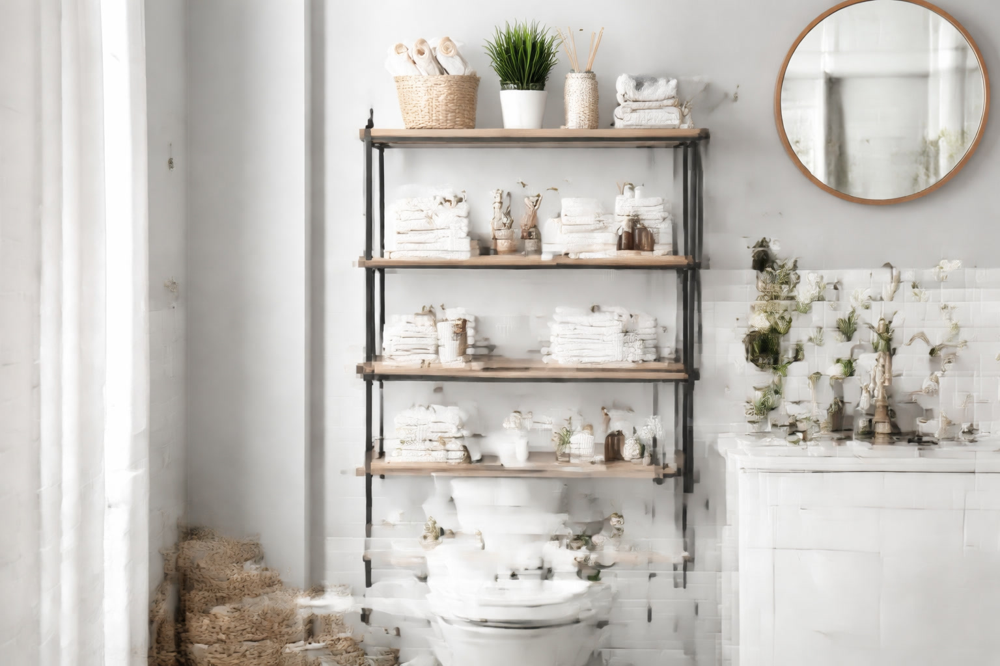

Best Over-the-Toilet Storage Units: 6 Space-Saving Picks (2026)

Bathroom Products Expert • 10+ years research

Quick Answer
The VASAGLE Over-the-Toilet Storage Rack is our top pick for its industrial design, adjustable shelves, and excellent 15,000+ customer reviews at $49.99. For a fully enclosed option, the Spirich Home Over-the-Toilet Cabinet offers doors to hide clutter. Budget buyers should check the Honey-Can-Do BTH-05281 Space Saver at $39.99.
Table of Contents
Why Over-the-Toilet Storage Is the Smartest Bathroom Upgrade
The area above your toilet is the single most wasted space in the average bathroom. In a room where every square inch matters, this 2-3 foot section of wall sits completely empty in most homes. Over-the-toilet storage units transform this dead space into functional, organized storage without reducing your bathroom's floor space by even one inch. These units typically provide 3-4 shelves of storage vertically, which can hold towels, toiletries, decorative baskets, extra toilet paper, cleaning supplies, and more. The best models are specifically designed to fit around standard and elongated toilets with adequate clearance for the tank lid. They range from simple open shelving to fully enclosed cabinets with doors, and from budget-friendly metal frames to premium solid wood furniture pieces. Installation is straightforward for most models, requiring only basic assembly and optional wall anchoring for safety.
Our 6 Best Over-the-Toilet Storage Units
1. VASAGLE Over-the-Toilet Storage Rack
Best For: Best overall value and design
- 3-tier open shelving industrial design
- Adjustable shelf heights
- Steel frame with particle board shelves
- Anti-tip wall mount hardware included
- 25 lb weight capacity per shelf
Pros
- Outstanding value
- Adjustable shelves
- Modern industrial look
- 15,000+ satisfied buyers
Cons
- Open shelves collect dust
- Not real wood
2. Spirich Home Over-the-Toilet Bathroom Cabinet
Best For: Hiding clutter behind closed doors
- Enclosed cabinet with double doors
- Open shelf above doors
- Adjustable internal shelf
- White finish suits most bathrooms
- Anti-tip hardware included
Pros
- Doors hide bathroom clutter
- Clean traditional look
- Adjustable internal shelf
Cons
- Heavier, harder to assemble
- Limited color options
Comparison Table
| Product | Style | Shelves | Material | Price | Rating |
|---|---|---|---|---|---|
| VASAGLE | Open | 3 | Steel + Wood | $49.99 | 4.5 |
| Spirich | Enclosed | 2+1 | Engineered Wood | $89.99 | 4.4 |
Open Shelving vs Enclosed Cabinets
Open Shelving is lighter, easier to assemble, more affordable, and provides easy access to stored items. It creates an airy, modern feel and works great with decorative baskets and containers. The downside is visible clutter if not organized neatly, and shelves collect dust more quickly in humid bathroom environments. Best for bathrooms where you want a decorative display element combined with function.
Enclosed Cabinets hide everything behind doors, creating a cleaner visual appearance. They protect stored items from moisture and dust. They feel more substantial and furniture-like. The tradeoffs are higher cost, heavier weight, more complex assembly, and items are less quickly accessible. Best for bathrooms where you want a neat, uncluttered appearance or need to store items you would prefer not to display.
What to Look For in Over-the-Toilet Storage
Toilet Clearance: Measure from the back wall to the front of your toilet tank, and from the floor to the top of the tank. Your storage unit needs to span wider than the toilet and provide at least 6 inches of clearance above the tank lid for easy removal during maintenance.
Stability: This is the most critical safety factor. Always choose units with anti-tip wall anchoring hardware and actually install it. A tall shelf loaded with heavy items above a toilet is a serious tipping hazard without proper anchoring, especially in homes with children or pets.
Weight Capacity: Check the per-shelf weight rating. Most budget units support 15-25 pounds per shelf. If you plan to store heavy items like stacked towels or large bottles, ensure the shelves can handle the load without bowing.
Moisture Resistance: Avoid raw untreated wood in a bathroom environment. Look for moisture-resistant coatings, engineered wood with laminate surfaces, or metal frames with powder coating. These materials withstand bathroom humidity without warping or rusting.
Installation and Safety Tips
- Always anchor to the wall. Use the included anti-tip bracket and hardware. Drill into a wall stud when possible for maximum holding strength. If no stud is available, use appropriate drywall anchors rated for the unit's weight.
- Level the unit carefully. An unlevel unit puts uneven stress on the frame and looks unprofessional. Use a level during assembly and add felt pads under the legs if your floor is uneven.
- Place heavier items on lower shelves. This lowers the center of gravity and improves stability. Keep lighter decorative items on upper shelves.
- Leave clearance for toilet maintenance. Ensure the tank lid can be removed without dismounting shelves. You will need access to the toilet's internal mechanisms occasionally for repairs and adjustments.
Frequently Asked Questions
Will over-the-toilet storage fit my toilet?
Most units are designed to fit standard and elongated toilets. Measure your toilet's width and depth, and compare to the unit's internal dimensions. Units typically need 24-28 inches of width and 8-10 inches of depth clearance behind the toilet.
How much weight can over-the-toilet shelves hold?
Budget models support 15-25 pounds per shelf. Premium models support 30-40 pounds. Always check the manufacturer's weight rating and distribute weight evenly across the shelf surface.
Do I need to drill into the wall?
For safety, yes. We strongly recommend using the anti-tip wall anchor on every over-the-toilet unit. Freestanding models can technically stand alone, but a loaded shelf above a toilet is a tipping hazard without wall anchoring. Renters can use removable wall anchors designed for drywall.
Our Final Verdict
The VASAGLE at $49.99 is the best value with adjustable shelves, modern design, and 15,000+ happy customers. The Spirich Cabinet at $89.99 is best if you want doors to hide clutter.